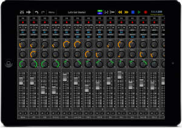
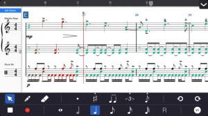
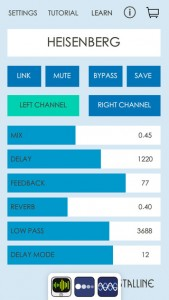
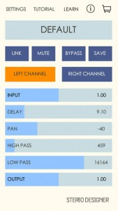
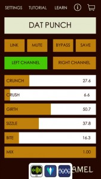
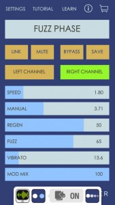
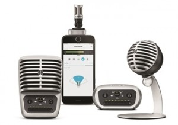
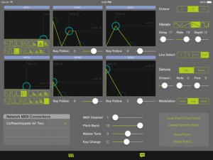

Posted by Mikers On January - 14 - 2015ADD COMMENTS
Most of us knew this has been in the pipeline for the past several months, but it’s great to finally see the public unveiling of a full features list and the GUI maker over. Looks like the best DAW on iPad, is about to get even better!
With over two years in the making, we’re really excited to finally give you a preview of the upcoming Auria Pro. Full MIDI capabilities, real-time audio warping, powerful audio bussing, two built-in synths and much more, Auria Pro raises the bar in mobile recording once again. Auria Pro will be on display at our booth at NAMM (Booth #6903).
Comprehensive MIDI capabilities including:
MIDI sequencing
Tempo and Time-signature tracks
Piano roll editor
Real-time MIDI parameters including quantize, velocity shift, velocity compression,
length compression, random, delay, legato and transpose
Groove template quantizing with built-in DNA grooves (additional grooves available for
purchase)
MIDI processing functions including Transpose, Fixed Length, Velocity Gain, Fixed
Humanize, Delete Overlaps, Crescendo, Reverse, Pedal to Length, Velocity Rescale,
Velocity Range, Velocity Curve and Compress/Limit
FabFilter Twin 2 Analog synth built in
WaveMachine Labs multi-format sampler built in
Other Features:
Powerful new audio routing with flexible busses
Real-time audio warping using Elastique Pro v3
Audio quantize feature
Transient slicing
Audio to MIDI conversion
Unlimited tracks
6 AUX sends
Project templates
Updated graphics and overall performance improvements
Auria Pro will be available Spring 2015 and will be priced at $49.99 USD, and existing Auria users will also be able to upgrade to Auria Pro for a reduced price. Pricing for the standard Auria version will be $24.99.
Symphony doubles as a music sketchbook and a multi-track studio that fits conveniently inside your pocket. We’ve made it the most elegant and powerful way to compose music on a handheld device.
To add a note, select a note length and tap anywhere on the score. Use the built-in keyboard, guitar, or a Core MIDI compatible keyboard to quickly enter notes and chords using step-entry or in real-time recording mode. Using this mode, you can play-in a part with the built-in keyboard to quickly capture a musical idea and have it automatically transcribed onto the score.
If you want to continue an existing project, import a Symphony/Symphony Pro, MusicXML, or MIDI file from your computer or from another app like Mail, DropBox, or Safari.
With Symphony, you can create a wide range of musical elements in your composition, including dynamics and articulations, time and key signature changes, clef changes, repeats, arpeggiated chords, glissandos, tuplets, tempo changes, sustain pedal, similes, and pickup measures. Furthermore, you can also create and edit chord symbols, lyrics, and annotations using the iPhone’s standard keyboard.
When you’re done composing, print out your score, or export your project as an AAC, PDF, MusicXML, MIDI or Symphony file. Share your song with a friend via email or SoundCloud, or send it directly to your computer with iTunes File Sharing.
Feature Highlights:
• 100+ built-in instruments
• Up to 15 instruments, 45 staves, and 4 voices/layers per composition
• Edit using standard music notation, guitar tabs, and percussion notation
• Add or edit notes by tapping on the score or by playing a built-in keyboard, guitar, bass guitar, or a connected Core MIDI instrument (requires Camera Connection Kit or Midi Mobilizer™ II)
• Record a part in real-time with a built-in instrument or a connected Core MIDI instrument
• Import MusicXML, MIDI, MXL, or Symphony/Symphony Pro projects
• Export as a PDF, MusicXML, MIDI, AAC, or Symphony file
• Multi-track copy/paste
• Edit, view, and play your score in portrait or landscape
• Make any number of tracks invisible to view only the particular staves you want at a given time
• Familiar gestures and convenient shortcuts for navigating menus
• Reorder and reposition staves vertically
• Tons of articulations and dynamics to fine-tune the playback of your composition
• Add grace notes and custom noteheads
• Edit the length or pitch of multiple notes and rests at once using multi-note select
• Delete a note, measure, or an entire selection area at once
• Loop playback between specific measures
• Metronome click during playback and recording, with a customizable volume level
• Undo/Redo almost any editing operation
• In Select Mode, tap on a measure with two fingers to add a time or key signature change, clef change, repeat, alternate ending, or double barline
• Chord symbol, lyric, and annotation tools
• Fully customizable stem directions and beam groups
• Transposing instruments and concert pitch options
• Change the tempo or clef at any point in the score
• Print an entire score from your iPhone with AirPrint
• Stream audio or share your screen wirelessly with AirPlay to compatible speakers, stereo systems, AV receivers, Apple TV, or other devices
• Create your own custom project template or use a built-in one
• Customizable chord symbol, lyric, and annotation sizes
• Auto-save
• Built-in manual
More Info:
• More information at symphonypro.net/iphone
• Discuss the app at forums.symphonypro.net
• Visit us on Facebook at facebook.com/symphonyapp
Posted by Mikers On January - 14 - 2015ADD COMMENTS
Crystalline Mini is a shimmer reverb/delay effect for Audiobus and Inter-app audio. Create synth-like tones and textures from almost any sound source, perfect for guitar, vocals, synths, sound design and more.
Crystalline Mini is capable of a wide range of sounds, including classic “shimmer” effects from the 80’s, unique pitch shifted delays and lush reverbs. Crystalline is a highly creative and unique effects processor.
Guitarists can plug their instrument into an audio interface such as the Apogee Jam and get the elusive shimmer reverb tone they’ve been searching for.
Crystalline Mini supports Core MIDI via the Camera Connection kit, USB MIDI interfaces, Virtual MIDI and WiFi connections. The MIDI Learn function lets you easily assign your MIDI controller’s knobs and sliders to control Crystalline’s effect parameters.
For more info visit http://crystallineapp.com.
In addition to Audiobus and Inter-app Audio support, Crystalline Mini can also process external instruments such as guitar, voice and synths by connecting a microphone or professional audio interface such as the Apogee Jam, ONE, or any iOS compatible USB audio interface. Guitarists can use our effects live by connecting the output of their audio interface to an amp.
For more info and video demos visit: http://crystallineapp.com
Check out our entire FX series including Caramel, Echo Pad, Stereo Designer and Swoopster!
COMPATIBILITY:
● requires iOS 8.0 or later
● iPhone 5 or newer
● Audiobus 2 compatible (Effect, state saving)
● Inter-App audio compatible (effect node)
● Compatible with DAW apps such as Garageband and Multitrack DAW
● compatible with USB audio interfaces
● Core MIDI compatible
FEATURES:
● Control Left and Right channel delay time, feedback, reverb and more.
● 16 delay modes for a wide variety of pitch shifted delay effects
● Multiple stereo output modes including Wide Stereo, Cross Feedback, Stereo Tremolo and Sum to Mono.
• Delay/Reverb Ducking with Sensitivity, Threshold, and Release
• Delay BPM sync, per channel or linked
• MIDI clock sync for delays
• Receive MIDI over Bluetooth LE
● Huge range of ambient sound effects possible, from beautiful shimmering reverbs to dissonant, metallic delays.
● Audiobus 2 compatible with state saving
● Inter-app Audio compatible
● Core MIDI compatible, works with any MIDI controller via MIDI Learn
Crystalline Mini works with just about any professional iOS compatible USB audio interfaces. Here is a list of interfaces that have been tested and verified to be compatible:
● Apogee Jam
● Apogee Mic
● Apogee ONE for iPad/Mac
● Apogee DUET for iPad/Mac
● Apogee QUARTET for iPad/Mac
● iConnectMIDI2+
● iConnectMIDI4+
● iRig
● iRig HD
● iRig iMic
● Focusrite Scarlett series (*requires USB hub)
● Focusrite iTrack Dock
● Alesis io2
● Alesis IO Dock
● Behringer UCA202
● many more
Posted by Mikers On January - 14 - 2015ADD COMMENTS
Stereo Designer Mini is an easy to use multi-purpose stereo shaping tool for Audiobus and Inter-app Audio. Create unique wide stereo image, “stereoize” a mono sound source, apply mid/side processing, independent high and low pass filters per channel, and more.
Process synths, drum machines and hundreds of other apps by connecting through Audiobus. Use Stereo Designer Mini as an effect inside DAW apps such as Garageband, Multitrack DAW, and AudioShare using Audiobus or Inter-app audio.
Stereo Designer Mini supports Core MIDI via the Camera Connection kit, USB MIDI interfaces, Virtual MIDI and WiFi connections. The MIDI Learn function lets you easily assign your MIDI controller’s knobs and sliders to control Stereo Designer’s effect parameters.
In addition to Audiobus and Inter-app Audio support, Stereo Designer Mini can also process external instruments such as guitar, voice and synths by connecting a microphone or professional audio interface such as the Apogee Jam, ONE, or any iOS compatible USB audio interface. Guitarists can use our effects live by connecting the output of their audio interface to an amp.
For more info and video demos visit: http://stereodesignerapp.com
Check out our entire FX series including Caramel, Crystalline, Echo Pad and Swoopster!
COMPATIBILITY:
● requires iOS 8.0 or later
● iPhone 5 or newer
● Audiobus 2 compatible (Effect, state saving)
● Inter-App audio compatible (effect node)
● Compatible with DAW apps such as Garageband and Multi-track DAW
● compatible with USB audio interfaces
● Core MIDI compatible
FEATURES:
● Control individual Left/Right channel volume, panning, filter and more.
● Mid/Side (M/S) processing mode lets you adjust the volume, high and low pass filters for Mid and Side independently.
● Widen or reduce the stereo width of an input signal.
● Independent panning position of each channel, allowing for interesting stereo placement.
● Individual High and Low Pass filter per channel for additional stereo shaping.
● Phase (polarity) invert Left/Right channels.
● Isolate the Left or Right channel and manipulate the resulting mono signal.
● “Stereoize” mono inputs using individual channel delay + High and Low Pass filters.
● Sum Left and Right channels to mono.
● Audiobus 2 compatible with state saving
● Inter-app Audio compatible
● Core MIDI compatible, works with any MIDI controller via MIDI Learn
Stereo Designer Mini works with just about any professional iOS compatible USB audio interfaces. Here is a list of interfaces that have been tested and verified to be compatible:
● Apogee Jam and Jam 96k
● Apogee Mic
● Apogee ONE for iPad/Mac
● Apogee DUET for iPad/Mac
● Apogee QUARTET for iPad/Mac
● iRig
● iRig HD
● iRig iMic
● Focusrite Scarlett series (*requires USB hub)
● Alesis io2
● Alesis IO Dock
● Behringer UCA202
● many more
Posted by Mikers On January - 14 - 2015ADD COMMENTS
Caramel Mini is a stereo distortion, crusher and fattener effect designed for Audiobus and Inter-App Audio. Caramel is perfect for adding lo-fi grit and punch to drums, bass, synths, guitar and more.
In addition to Audiobus and Inter-App Audio, Caramel Mini can process external hardware by connecting a professional USB audio interface such as the Apogee Jam or Apogee ONE, and many more compatible USB interfaces. You can also use the built in headset microphone. Guitarists can use our effects live by connecting the output of their audio interface to an amp.
Caramel Mini supports Core MIDI via the Camera Connection kit, USB MIDI interfaces, Virtual MIDI and WiFi connections. The MIDI Learn function lets you easily assign your MIDI controller’s knobs and sliders to control Caramel’s effect parameters.
COMPATIBILITY:
● requires iOS 8.0 or later
● iPhone 5 or newer
● Audiobus 2 compatible (Effect, state saving)
● Inter-App audio compatible (effect node)
● Compatible with DAW apps such as Garageband and Multitrack DAW
● compatible with USB audio interfaces
● Core MIDI compatible
● Receive MIDI over Bluetooth LE
FEATURES:
● Control Left and Right channel Crunch, Crush, Girth, SIzzle independently for interesting stereo effects.
● Girth parameter adds subtle to punishing low end boost to drums and bass.
● Multiple stereo output modes including Normal Stereo, Wide Stereo, and Sum to Mono.
● Wide range of colorful lo-fi distortion tones are possible, from subtle grit and punch to absolute digital wreckage.
● Audiobus 2 compatible with state saving
● Inter-app Audio compatible
● Core MIDI compatible, works with any MIDI controller via MIDI Learn
Caramel Mini works with just about any professional iOS compatible USB audio interfaces. Here is a list of interfaces that have been tested and verified to be compatible:
● Apogee Jam
● Apogee Mic
● Apogee ONE for iPad/Mac
● Apogee DUET for iPad/Mac
● Apogee QUARTET for iPad/Mac
● iConnectMIDI2+
● iConnectMIDI4+
● iRig
● iRig HD
● iRig iMic
● Focusrite Scarlett series (*requires USB hub)
● Focusrite iTrack dock
● Alesis io2
● Alesis IO Dock
● Behringer UCA202
● many more
Posted by Mikers On January - 11 - 2015ADD COMMENTS
Swoopster Mini is a highly playable Flanger, Fuzz, and Vibrato effect designed for Audiobus 2 and Inter-app audio.
Process synths, drum machines and hundreds of other apps by connecting through Audiobus. Use Swoopster Mini as an effect inside Garageband, Multitrack DAW and AudioShare using Audiobus or Inter-app audio.
Swoopster Mini supports Core MIDI via the Camera Connection kit, USB MIDI interfaces, Virtual MIDI and WiFi connections. The MIDI Learn function lets you easily assign your MIDI controller’s knobs and sliders to control Swoopster’s effect parameters.
In addition to Audiobus and Inter-app Audio support, Swoopster Mini can also process external instruments such as guitar, voice and synths by connecting a microphone or professional audio interface such as the Apogee Jam, ONE, or any iOS compatible USB audio interface. Guitarists can use our effects live by connecting the output of their audio interface to an amp.
COMPATIBILITY:
● requires iOS 8.0 or later
● iPhone 5 or newer
● Audiobus 2 compatible (Effect, state saviing)
● Inter-App audio compatible (effect node)
● Compatible with DAW apps such as Garageband and Multitrack DAW
● compatible with USB audio interfaces
● Core MIDI compatible
• Receive MIDI over Bluetooth LE
Features:
● stereo Fuzz, Flange and Vibrato effect processor
● versatile flanger capable of sounds ranging from smooth phasey flange to wildly distorted, pitch shifted madness
● flanger with positive and negative feedback
● independent left and right channel effects engines can be controlled separately or linked
● Audiobus 2 compatible (Effect, state saving)
● Inter-App Audio compatible (effect node)
● Core MIDI compatible, works with any MIDI controller via MIDI Learn
● true stereo input and effects processing
● several output style options including normal stereo, wide stereo, and sum to mono
Swoopster Mini works with just about any professional iOS compatible USB audio interfaces. Here is a list of interfaces that have been tested and verified to be compatible:
● Apogee Jam
● Apogee Mic
● Apogee ONE for iPad/Mac
● Apogee DUET for iPad/Mac
● Apogee QUARTET for iPad/Mac
● iRig
● iRig HD
● iRig iMic
● Focusrite Scarlett series (*requires USB hub)
● Alesis io2
● Alesis IO Dock
● Behringer UCA202
● many more
Posted by Mikers On January - 11 - 2015ADD COMMENTS
Shure is introducing the MOTIV™ range of digital products, a new plug-and-play microphone line aimed at individuals looking to capture high-quality, 24-bit 48 kHz audio via a Mac, PC or Apple iOS device for podcasts, YouTube videos, field recording, or to capture acoustic/vocal performances. All four members of the new MOTIV range are Apple MFi (made for iPhone, iPod, or iPad) certified devices, including three condenser models (the MV5, MV88 stereo model, and MV51 large-diaphragm model) and a sleek digital audio interface (MVi) that can connect directly to any iOS device without additional adapters or connection kits. For in-depth control, there’s also the free ShurePlus™ MOTIV Mobile Recording iOS app.
The microphones and interface come with five user-selectable DSP modes — Speech, Singing, Flat, Acoustic Instrument, and Loud — designed to help entry-level users seeking better audio quality, and which set audio parameters on the different models behind the scenes, including gain, EQ, and compression.
“The design of the MOTIV range acknowledges respected Shure products of the past, while offering the latest in modern technology and connectivity,” comments Shure Senior Product Manager Wolfgang Bilz. “The MOTIV range was conceived to offer everyone the means to record high-quality sound directly onto mobile and USB devices. With their advanced sound quality, durable construction, powerful DSP and flexible operation, they continue the high standards for which Shure is known.”
About MOTIV Digital Products
• MV5 Digital Condenser Microphone: The MV5 is ideal for recording vocals and acoustic instruments, or for use with Skype, and comes equipped with three DSP modes, Micro-B to USB and Micro-B to Lightning cables. Engineered for quick and easy portable use, the MOTIV MV5 has a custom tuned microphone capsule and a built-in headphone output for real-time monitoring. It’s available in grey and black and ships complete with a detachable desktop stand and integrated thread mount compatible with any quarter-inch standard camera tripod.
• MV88 iOS Digital Stereo Condenser Microphone: The MV88 allows users of any Apple iPhone, iPod, or iPad equipped with a Lightning connector to capture high-quality field recordings on the go. The mid-side microphone element is situated on a hinged, rotating mount for flexible repositioning – even in video applications, and its five built-in DSP preset modes, plus 5-band EQ, stereo width control, and other advanced features are easily accessed through the free ShurePlus MOTIV Mobile Recording App.
• MV51 Digital Large-Diaphragm Condenser Microphone: Specifically engineered for high-quality digital audio capture, the all-digital MV51 connects to any iOS device, Mac, or PC, and comes with Micro-B to Lightning and Micro-B to USB cables. In addition to its five DSP preset modes for optimal recording, the MV51 includes the industry’s first touch panel control for quick access to gain, phantom power, mute, and headphone volume adjustments. The one-inch capsule element is easily monitored in real-time through the built-in headphone output, and the striking vintage design includes an integrated kickstand for desktop use, which quickly adapts for use with standard mic stands.
• MVi Digital Audio Interface: The durable, low-profile MVi connects any XLR microphone or quarter-inch (6.3 mm) jack instrument (guitar, bass, or keyboard) to an iOS device, Mac, or PC for high-quality audio capture. In addition to the five built-in DSP preset modes, the MVi also includes Micro-B to Lightning and Micro-B to USB cables, as well as Shure’s onboard touch panel control for quick access to gain, mute, and headphone volume adjustments.
• ShurePlus MOTIV Mobile Recording App: The free Recording App for iOS devices allows real-time adjustments for the best performance. The easy-to-use interface includes selectable DSP preset modes, microphone gain adjustment, and an intuitive stereo width control that adjusts the microphone pick-up pattern for optimal results, depending on the sound source and surrounding environment.
The MOTIV product line will be available in summer 2015.
Posted by Mikers On January - 11 - 2015ADD COMMENTS
Midi Jam converts a keyboard midi output to a visual display of every chord the keyboardist is playing at the very moment the chord is being played!
Midi Jam is perfect for musicians not able to play by ear because instantly the info you need is right in front of you!
Midi Jam takes the guesswork out of any band Jam Session letting you play your preferred instrument with complete confidence in the absence of sheet music.
Just want to be in sync with the lead instrument ? Or join in the Jam Session when no sheet music is on hand? – Midi Jam is just what you need so that you can play like a pro.
Why learn to play by ear when you never need to?
Now you can turn up to a Jam Session and always look like a professional!
Connect the keyboard midi out to your network with iRig MIDI/midi to usb/usb midi and you’re good to go!
So all musicians keep loving what they do:
Spread the latest buzz in the jamming world and give Midi Jam a go!
You’ll wonder why you waited so long!!
This is one of the coolest controllers I’ve seen for awhile. Although the app is free, it’s the physical controller that you’re gonna want to get your hands on, literally!
The AUUG Motion Synth transforms your iPhone or iPod touch into a new kind of musical instrument.
Your iPhone or iPod touch becomes an expressive controller that lets you play notes via touch and shape their sound through motion.
Select “Settings” > “Help / Upgrade” > “Quick Start Guide” in the Motion Synth App for instructions on how to get set-up to make sound.
Play any sound:
The AUUG Motion Synth tracks your movements and screen touches to ‘play’ other iOS sound apps, giving you access to a vast array of sounds and effects.
You can also play external devices like hardware synths or vocal harmonizers as well as control audio or visual software on a laptop (via wifi or cabled connections).
Use the Motion Synth App by itself or with a Motion Synth Grip:
The Motion Synth App has two modes:
1) Single-key mode: This Motion Synth App mode allows you to quickly engage with motion-based music control, and includes setup instructions for motion-controlling GarageBand (while GarageBand runs in ‘background mode’ on your iPhone/iPod touch). Note: Garageband is now free for most iOS users.
Select “Settings” > “Help / Upgrade” > “Quick Start Guide” in the Motion Synth App to get started using the Motion Synth with Garageband.
2) Multi-key mode: This Motion Synth App mode is designed to work with the AUUG Motion Synth Grip: a physical holder that securely attaches your iPhone or iPod touch to your hand, thereby improving the dexterity and accuracy with which you can trigger notes via the touch screen.
Posted by Mikers On January - 6 - 2015ADD COMMENTS
CZ Touch is a patch editor for the Casio CZ series of synthesizers. If you have a CZ-101, CZ-1000, or CZ-5000 then this is the editor for you! CZ Touch gives you touch-based control over all of the voice parameters on your CZ synthesizer. Just make a change on the screen, and the change is instantly sent to your synthesizer.
CZ Touch especially shines in giving you direct, easy control over the 8-stage envelopes on your synth. No more menu diving to create a complex envelope.
Here are some more features:
* Save patches to your iOS device, with names
* Share/export your patches via email: patches are saved as sysex files that can be transmitted to your synthesizer by a sysex program.
* Copy/Paste envelopes between DCO, DCW, and DCA
* Create random patches
* Copy the current patch from your synth to your iOS device, for further editing
Use this app either with a MIDI adapter for your iOS device, or via a wireless MIDI connection to your Mac or PC, with your CZ synthesizer connected to your Mac or PC via MIDI.
REQUIREMENTS:
* A Casio CZ synthesizer (CZ-101, CZ-1000, or CZ-5000)
* A MIDI adapter for your iOS device, OR a Mac or PC connected to your CZ via MIDI and a wi-fi connection between your Mac or PC and your iOS device.
NOTE: This app does NOT make any sound! It’s just an editor for your Casio CZ synthesizer. If you don’t have a Casio CZ synthesizer, this app won’t do anything useful for you.
This app is not affiliated or endorsed by Casio. It’s just an app I made to fill a need!
Thanks for dropping by musictool. Whether you're a dedicated app developer, or devoted app users like us, we hope you find what you're after. Ping us via the Contact Page if you want to touch base.


{kind=link}
{kind=link}
{kind=link}
{kind=link}
{kind=link}
{kind=link}
{kind=link}
{kind=link}
{kind=link}
{kind=link}